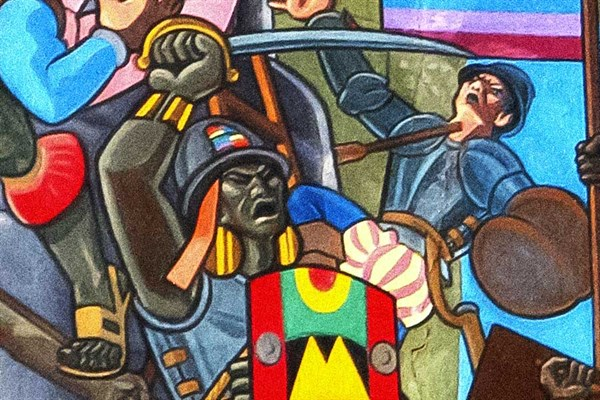
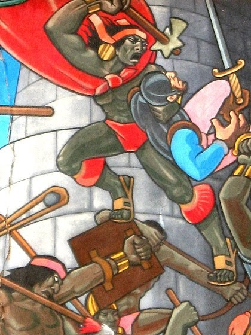

“Andaba pues este orejón de una parte a otra, en lo alto del cubo, estorbando a los españoles que querían subir con escaleras. Pues avisándoles a los suyos que subía algún español por alguna parte, aguijaba a él como un león con la espada en mano. Visto Hernando Pizarro mandó a los españoles que subían que no matasen a este capitán orejón, sino que lo tomasen con vida. Subiendo a uno a los españoles por otras escalas ganaron este cubo, porque no pudo este orejón acudir a todas partes. Viendo este orejón que le habían ganado el fuerte, arrojando las armas se tapó la cabeza y el rostro con la manta que ellos traen por capa y se arrojó del cubo abajo y así se hizo pedazos. A Hernando Pizarro mucho le pesó no tomarle con vida” Pedro Pizarro, Relación del descubrimiento y conquista de los reinos del Perú, 1571
 